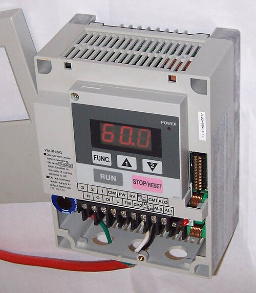

Biến tần & tự động hóa
Kiểm tra, sửa chữa biến tần, bộ điều khiển và thiết bị truyền động công nghiệp.
Yêu cầu dịch vụ →Đọc bài viết
Kiểm tra và sửa chữa biến tần
Biến tần điều khiển tốc độ động cơ trong nhiều hệ thống sản xuất. Khi thiết bị báo lỗi hoặc hoạt động không ổn định, cần xem xét cả biến tần và điều kiện vận hành để lựa chọn phương án xử lý.
Dấu hiệu cần kiểm tra
Thiết bị không lên nguồn, không nhận lệnh chạy, dừng khi mang tải hoặc hiển thị cảnh báo. Mã lỗi cần được đối chiếu theo đúng hãng và model thiết bị.
Nội dung tiếp nhận và kiểm tra
Ghi nhận mã lỗi, thông số động cơ, tải sử dụng và lịch sử sự cố. Kiểm tra tình trạng thiết bị, đánh giá khả năng sửa chữa, cài đặt thông số hoặc đề xuất thay thế phù hợp.
Thông tin cần chuẩn bị
Gửi ảnh tem model, công suất, màn hình mã lỗi và mô tả thời điểm xảy ra lỗi. Không tự tháo thiết bị hoặc chạm vào đầu nối điện; việc kiểm tra bên trong cần do kỹ thuật viên thực hiện.
Lỗi thường gặp & cách xử lý tạm thời
Kiểm tra bên ngoài, theo hướng dẫn đúng model. Các bước dưới đây không thay thế việc chẩn đoán kỹ thuật.
Cảnh báo nhiệt độ cao
Dừng máy theo quy trình vận hành. Quan sát bên ngoài và dọn vật đang che cửa thông gió của tủ, không mở tủ hoặc chạm thiết bị. Để kỹ thuật kiểm tra nếu cảnh báo còn xuất hiện.
Có nguồn nhưng không chạy
Người vận hành kiểm tra trạng thái cho phép chạy trên HMI theo hướng dẫn của máy. Không đổi chế độ điều khiển hoặc đấu tắt tín hiệu liên động.
Mã lỗi xuất hiện rồi lặp lại
Chụp mã lỗi và tem model, ghi thời điểm phát sinh. Không reset liên tục hoặc tự tăng giới hạn dòng; cần tìm nguyên nhân trước khi chạy lại.
Nếu có mùi khét, khói, tia lửa hoặc tiếng động bất thường, ngừng sử dụng, giữ khoảng cách và gọi kỹ thuật. Không mở tủ điện hoặc tháo thiết bị.
Tham khảo: Schneider Electric: cảnh báo quá nhiệt.